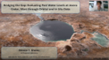
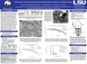
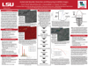
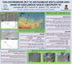
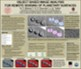

Publications | Peer-Reviewed |
Altmetric | Dimensions | ||
|---|---|---|---|---|
| [13] | Mineralogy, Morphology, and Emplacement History of the Maaz Formation on the Jezero Crater Floor from Orbital and Rover Observations | |||
|
B. H.N. Horgan, A. Udry, M.S. Rice, S. Alwmark, H. E.F. Amundsen, J.F. Bell III, L.S. Crumpler, B. Garczynski, J.R. Johnson, K.M. Kinch, L. Mandon, M. Merusi,
C. Million, J.I. Nunez, P.S. Russell, J.I. Simon, M. St. Clair, K.M. Stack, A.F. Vaughan, B.V. Wogsland, A.M. Annex, A. Bechtold, T. Berger, O. Beyssac, A.J. Brown, E. Cloutis,
B.A. Cohen, S. Fagents, L.C. Kah, K. Farley, D.T. Flannery, S. Gupta, S.E. Hamran, Y. Liu, G. Paar, C. Quantin-Nataf, N. Randazzo, E.M. Ravanis, S.F. Sholes,
D. Shuster, V.Z. Sun, C. Tate, N. Tosca, M. Wadhwa, and R.C. Wiens 2023, Journal of Geophysical Reseach: Planets | doi:10.1029/2022JE007612 |
||||
| [12] | The Complex Exhumation History of Jezero Crater Floor Unit and its Implication for Mars Sample Return | |||
|
C. Quantin-Nataf, S. Alwmark, F. Calef, J. Lasue, K. Kinch, K. Stack Morgan, V. Sun, N. Williams, E. Dehouck, L. Mandon, N. Mangold, O. Beyssac, E. Clave,
S. Walter, J. Simon, A. Annex, B. Horgan, J. Rice, D. Shuster, B. Cohen, L. Kah, S.F. Sholes, and B. Weiss 2023, Journal of Geophysical Reseach: Planets, JGRE22219 | doi:10.1029/2022JE007628 |
||||
| [11] | The Martian Boulder Automatic Recognition System, MBARS | |||
|
D. Hood, S.F. Sholes, S. Karunatillake, C. Fassett, R. Ewing, and J. Levy 2022, Earth and Space Science 9(9): e2022EA002410 | doi:10.1029/2022EA002410 | preprint | MBARS Code | Data |
||||
| [10] | Aqueously Altered Igneous Rocks Sampled on the Floor of Jezero Crater, Mars | |||
|
K.A. Farley, K.M. Stack, D.L. Shuster, B.H.N. Horgan, J.A. Hurowitz, J.D. Tarnas, J.I. Simon, V.Z. Sun, E.L. Scheller, K.R. Moore, S.M. McLennan, P.M. Vasconcelos, R.C. Wiens, A.H. Treiman, L.E. Mayhew, O. Beyssac, T.V. Kizovski, N.J. Tosca,
K.H. Williford, L.S. Crumpler, L.W. Beegle, J.F. Bell III, B.L. Ehlmann, Y. Liu, J.N. Maki, M.E. Schmidt, A.C. Allwood, H.E.F. Amundsen, R. Bhartia, T. Bosak, A.J. Brown, B.C. Clark, A. Cousin, O. Forni, T.S.J. Gabriel, Y. Goreva, S. Gupta, S.E. Hamran,
C.D.K. Herd, K. Hickman-Lewis, J.R. Johnson, L.C. Kah, P.B. Kelemen, K.B. Kinch, L. Mandon, N. Mangold, C. Quantin-Nataf, M.S. Rice, P.S. Russell, S. Sharma, S. Siljestrom, A. Steele, R. Sullivan, M. Wadhwa, B.P. Weiss, A.J. Williams, B.V. Wogsland, P.A. Willis,
T.A. Acosta-Maeda, P. Beck, K. Benzerara, S. Bernard, A.S. Burton, E.L. Cardarelli, B. Chide, E. Clave, E.A. Cloutis, B.A. Cohen, A.D. Czaja, V. Debaille, E. Dehouck, A.G. Fairen, D.T. Flannery, S.Z. Fleron, T. Fouchet, J. Frydenvang, B.J. Garczynski, E.F. Gibbons, E.M. Hausrath,
A.G. Hayes, J. Henneke, J.L. Jorgensen, E.M. Kelly, J. Lasue, S.Le Mouelic, J.M. Madariaga, S. Maurice, M. Merusi, P.Y. Meslin, S.M. Milkovich, C.C. Million, R.C. Moeller, J.I. Nunez, A.M. Ollila, G. Paar, D.A. Paige, D.A.K. Pedersen, P.Pilleri, C. Pilorget, P.C. Pinet,
J.W. Rice Jr., C. Royer, V. Sautter, M. Schulte, M.A. Sephton, S.K. Sharma, S.F. Sholes, N. Spanovich, M. St. Clair, C.D. Tate, K. Uckert, S.J. Vanbommel, A.G. Yanchilina, and M.P. Zorzano 2022, Science 377(6614): eabo2196 | doi:10.1126/science.abo2196 |
||||
| [9] | Impact Craters and the Observability of Ancient Martian Shorelines | |||
|
M. Baum, S.F. Sholes and A. Hwang 2022, Icarus, 115178 | doi:10.1016/j.icarus.2022.115178 | Code | Data | ArXiv eprint | PhysicsWorld Article |
||||
| [8] | Constraints on the Uncertainty, Timing, and Magnitude of Potential Mars Oceans from Topographic Deformation Models | |||
|
S.F. Sholes and F. Rivera-Hernandez 2022, Icarus 378, 114934 | doi:10.1016/j.icarus.2022.114934 | Code | Bad Astronomy Article |
||||
| [7] | Perseverance Rover Reveals an Ancient Delta-lake System and Flood Deposits at Jezero Crater, Mars | |||
|
N. Mangold and S. Gupta, O. Gasnault, G. Dromart, J.D. Tarnas, S.F. Sholes, B. Horgan, C. Quantin-Nataf, A.J. Brown, S. Le Mouelic, R.A. Yingst, J.F. Bell, O. Beyssac, T. Bosak, F. Calef III, B.L. Ehlmann, K.A. Farley, J.P. Grotzinger, K. Hickman-Lewis, S. Holm-Alwmark, L.C. Kah, J. Martinez-Frias, S.M. McLennan, S. Maurice, J.I. Nunez, A.M. Ollila, P. Pilleri, J.W. Rice Jr., M. Rice, J.I. Simon, D.L. Shuster, K.M. Stack, V.Z. Sun, A.H. Treiman, B.P. Weiss, R.C. Wiens, A.J. Williams, N.R. Williams, and K.H. Williford 2021, Science 374(6568): pgs. 711-717 | doi:10.1126/science.abl4051 | Time Article |
||||
| [6] | Where are Mars' Hypothesized Ocean Shorelines? Large Lateral and Topographic Offsets Between Different Versions of Paleoshoreline Maps | |||
|
S.F. Sholes, Z.I. Dickeson, D.R. Montgomery, and D.C. Catling. 2021, Journal of Geophysical Research: Planets 126, e2020JE006486 | doi:10.1029/2020JE006486 | preprint doi:10.1002/essoar.10502868.1 | Data Products | Code | JPL Research Highlight |
||||
| [5] | Quantitative High-Resolution Re-Examination of a Hypothesized Ocean Shoreline in Cydonia Mensae on Mars | |||
|
S.F. Sholes, D.R. Montgomery, and D.C. Catling. 2019, Journal of Geophysical Research 124: pgs. 316-336 | doi:10.1029/2018JE005837 | Data Products | AGU Research Spotlight |
||||
| [4] | A Maximum Subsurface Biomass on Mars from Untapped Free Energy: CO and H2 as Potential Antibiosignatures | |||
|
S.F. Sholes, J. Krissansen-Totton, and D.C. Catling. 2019, Astrobiology 19(5): pgs. 655-668 | doi:10.1089/ast.2018.1835 | Code | NewScientist Article |
||||
| [3] | Anoxic Atmospheres on Mars Driven by Volcanism: Implications for Past Environments and Life | |||
|
S.F. Sholes, M.L. Smith, M.W. Claire, K.J. Zahnle, and D.C. Catling. 2017, Icarus 290: pgs. 46-62 | doi:10.1016/j.icarus.2017.02.022 | arXiv eprint | Discovery Seeker Article |
||||
| [2] | Detecting Volcanism on Exoplanets using Transient Sulfate Aerosols | |||
|
A. Misra, J. Krissansen-Totton, M. Koehler, and S.F. Sholes 2015, Astrobiology 15(6): pgs. 462-477 | doi:10.1089/ast.2014.1204 | Press Release | Astrobiology Magazine Article |
||||
| [1] | Time Scales of Erosion and Deposition Recorded in the Residual South Polar Cap of Mars | |||
|
P.C. Thomas, W.M. Calvin, P. Gierasch, R. Haberle, P.B. James, and S.F. Sholes 2013, Icarus 225(2): pgs. 923-932 | doi:10.1016/j.icarus.2012.08.038 |
||||
Publications | Submitted or In-Preparation |
|||
|---|---|---|---|
| • | |||
| • |
Global Investigation of Hypothesized Ocean Shoreline Sites on Mars S.F. Sholes, D.R. Montgomery, and D.C. Catling 2022, prepared for Planetary Science Journal | (fully drafted) |
||
Conference Abstracts |
|||
|---|---|---|---|
| [24] |
Geomorphology and Relative Ages of the Channel Belt Deposits in Jezero's Western Delta R.E. Kronyak, K.M. Stack, S.F. Sholes, V.Z. Sun, S. Gupta, D.L. Shuster, and G. Caravaca 2023, 53rd Lunar and Planetary Science Conference, Abstract #2067 | Link | |
||
| [23] |
Constructing Geological Cross-Sections to Constrain the Three-Dimensional Stratigraphic Architecture of the Jezero Delta Front Barnes et al. including S.F. Sholes 2023, 53rd Lunar and Planetary Science Conference, Abstract #2716 | Link | |
||
| [22] |
Insights into the Sedimentary Record and Processes of the Western Delta of Jezero crater (Mars) as observed by the Mars 2020 rover Perseverance. G. Caravaca et al. including S. Sholes 2022, AGU Fall Meeting, Abstract #1071429 | Link | |
||
| [21] |
Emplacement History of Lava Flows of the Máaz Formation on the Jezero Crater Floor: Geochronological Significance and Relationship with the Delta B.H.N. Horgan et al. including S. Sholes 2022, AGU Fall Meeting, Abstract #1178067 | Link | |
||
| [20] |
The Three-Dimensional Stratigraphic Architecture of the Jezero Delta Front R. Barnes, S. Gupta, G. Paar, A. Bechtold, T. Ortner, C. Traxler, K. Stack, J.F. Bell, G. Caravaca, O.A. Kanine, C. Tate, M. Tebolt, A. Annex, B.H.N. Horgan, J.I. Nunez, S. Sholes, L.C. Kah, N. Schmitz, R.M.E. Williams 2022, AGU Fall Meeting, Abstract #1167833 | Link | |
||
| [19] |
Topographic Trends of the Geologic Units in Jezero Crater: Lake Levels, Potential Shorelines, and the Crater Floor Units S.F. Sholes, K.M. Stack, L.C. Kah, J.I. Simon, D.L. Shuster, and N. Mangold 2022, 52nd Lunar and Planetary Science Conference, Abstract #2641 | PDF | (talk) |
||
| [18] |
Were Jezero and Gale Craters Submerged by a Martian Ocean? Quantified Uncertainties in Paleo-Ocean Levels on Mars S.F. Sholes 2022, 52nd Lunar and Planetary Science Conference, Abstract #2603 | PDF | (poster) |
||
| [17] |
The Martian Boulder Automatic Recognition System: Comparison to Old and New Tools for Large-Scale Automatic Boulder Measurement D.R. Hood, R.C. Ewing, S. Karunatillake, S.F. Sholes, C.I. Fassett, and P. James 2022, 52nd Lunar and Planetary Science Conference, Abstract #1483 | PDF | (poster) |
||
| [16] |
Simulated Destruction of Putative Martian Shorelines by Crater Populations M. Baum and S.F. Sholes 2022, 52nd Lunar and Planetary Science Conference, Abstract #1114 | PDF | (talk) |
||
| [15] |
Using Orbital and Rover Imagery to Reconstruct the History of Jezero Crater Lake from 3D Digital Topography M.K. Kanine, B.L. Ehlmann, C. Tate, S. Gupta, J. Grotzinger, J.N. Reahl, G. Parr, T. Ortner, L.C. Kah, S.F. Sholes, and J.F. Bell 2022, 52nd Lunar and Planetary Science Conference, Abstract #1854 | PDF | (talk) |
||
| [14] |
Significance of the Variations in Fluvial Input Within Jezero Crater from Perseverance Rover Observations N. Mangold et al. (inc. S.F. Sholes) 2022, 52nd Lunar and Planetary Science Conference, Abstract #1814 | PDF | (poster) |
||
| [13] |
Observations of the Jezero Crater Delta Front by Perseverance Cameras N. Mangold, S. Gupta, O. Gasnault, G. Dromart, J.D. Tarnas, S.F. Sholes, B. Horgan, C. Quantin-Nataf, A.J. Brown, S. Le Mouelic, R.A. Yingst, J.F. Bell, O. Beyssac, T. Bosak, F. Calef III, B.L. Ehlmann, K.A. Farley, J.P. Grotzinger, K. Hickman-Lewis, S. Holm- Alwmark, L.C. Kah, J. Martinez-Frias, S.M. McLennan, S. Maurice, J.I. Nunez, A.M. Ollila, P. Pilleri, J.W. Rice, J.I. Simon, D.L. Shuster, K.M. Stack, V.Z. Sun, A.H. Treiman, B.P. Weiss, R.C. Wiens, A.J. Williams, N.R. Williams, K.H. Williford and the Mars2020 Team. 2021, American Geophysical Union, Abstract #886581 | Link | (talk) |
||
| [12] |
Bridging the Gap: Evaluating Past Water Levels at Jezero Crater, Mars through Orbital and In Situ Data S.F. Sholes, K.M. Stack, L.C. Kah, J.I. Simon, and A. Brown. 2021, Geological Society of America Connects, Abstract #371239 | doi:10.1130/abs/2021AM-371239 | (talk) |
 | |
| [11] |
Large-Scale Assessment of Polygon-Edge Boulder Clustering in the Martian Northern Lowlands D.R. Hood, C.I. Fassett, S. Karunatillake, S.F. Sholes, and R.C. Ewing 2020, 51st Lunar and Planetary Science Conference, Abstract #2620 | ads:2020LPI....51.2620H | (poster) [cancelled due to Covid-19] |
||
| [10] |
Reassessing Mars' Global Ocean Shorelines S.F. Sholes, D.R. Montgomery, and D.C. Catling. 2019, 9th International Conference on Mars, Abstract #6282 | ads:2019LPICo2089.6282S | (talk) |
||
| [9] |
Verification of Automatically Measured Boulder Populations in HiRISE Images D.R. Hood, S. Karunatillake, C.I. Fassett, and S.F. Sholes. 2019, 50th Lunar and Planetary Science Conference, Abstract #1893 | ads:2019LPI....50.1893H | (poster) |
 | |
| [8] |
Biomass Limits on Subsurface Martian Life from Atmospheric Gases S.F. Sholes, J. Krissansen-Totton, and D.C. Catling. 2019, Mars Extant Life: What's Next?, Abstract #5019 | ads:2019LPICo2108.5019S | (invited talk) [cancelled due to government shutdown] |
||
| [7] |
Automated Boulder Detection and Measuring in HiRISE Images D.R. Hood, S. Karunatillake, C.I. Fassett, and S.F. Sholes. 2018, 49th Lunar and Planetary Science Conference, Abstract #2437 | ads:2018LPI....49.2437H | (poster) |
 | |
| [6] |
Boulder-Size Distributions as Indicators for Deposition Process on Earth and Mars S.F. Sholes, A. Mushkin, and D.C. Catling. 2017, Geological Society of America, Abstract #304037 | doi:10.1130/abs/2017AM-304073 | (talk) |
||
| [5] |
How Many Blue Whales on Mars? Obtaining a Maximum Extant Biomass Using CO Antibiosignatures S.F. Sholes, J. Krissansen-Totton, and D.C. Catling. 2017, Astrobiology Science Conference, Abstract #3189 | Link | (talk) |
||
| [4] |
Quantified Identification of Paleo-Terraces Along a Proposed Martian Ocean Contact S.F. Sholes, D.R. Montgomery, and D.C. Catling. 2017, 48th Lunar and Planetary Science Conference, Abstract #1764 | ads:2017LPI....48.1764S | (talk) |
||
| [3] |
An Anoxic Atmosphere on Early, Volcanically Active Mars and its Implications for Life S.F. Sholes, M.L. Smith, M.W. Claire, K.J. Zahnle, and D.C. Catling. 2015, Astrobiology Science Conference, Abstract #7455 | Link | (talk) |
||
| [2] |
High-Resolution Examination of the Geomorphology of Proposed Ocean Shorelines on Mars S.F. Sholes, D.C. Catling, R. Pretlow, and D.R. Montgomery. 2014, 8th International Conference on Mars, Abstract #1014 | ads:2014LPICo1791.1014S | (poster) |
 | |
| [1] |
Object Based Image Analysis for Remote Sensing of Planetary Surfaces S.F. Sholes, V.F. Chevrier, and J.A. Tullis. 2013, 44th Lunar and Planetary Science Conference, Abstract #1527 | ads:2013LPI....44.1527S | (poster) |
 | |
Publications | Selected Acknowledged Work |
Altmetric | Dimensions | ||
|---|---|---|---|---|
| [4] | Debris Accumulations of CO2 Ice in the South Polar Residual Cap of Mars: Longevity and Processes | |||
|
P.C. Thomas, W.M. Calvin, and P.B. James 2020, Icarus 341: 113625 | doi:10.1016/j.icarus.2020.113625 **collected data** |
||||
| [3] | Dune Casts Preserved by Partial Burial: The Dune Pits on Mars | |||
|
M.D. Day and D.C. Catling 2018, Journal of Geophysical Research 123: pgs. 1431-1448 | doi:10.1029/2018JE005613 **provided helpful discussions and software support** |
||||
| [2] | Abundance is Not Enough: Multiple Lines of Evidence in Testing for Ecological Stability in the Fossil Record | |||
|
J. Nagel-Myers, G.P. Dietl, J.C. Handley, and C.E. Brett 2013, PLoS ONE 8(5): e603071 | doi:10.1371/journal.pone.0063071 **provided field assistance and specimen collection** |
||||
| [1] | Protichnites eremita Unshelled? Experimental Model-Based Neoichnology and New Evidence for a Euthycarcinoid Affinity for this Ichnospecies | |||
|
J. Collette, K. Gass, and J. Hagadorn. 2012, Journal of Paleontology 86(3): pgs. 442-454 | doi:10.1666/11-056.1 **provided published specimen photographs** |
||||